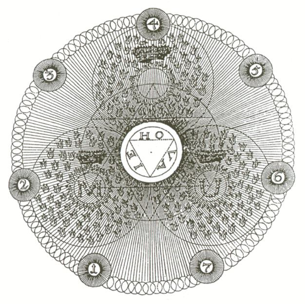
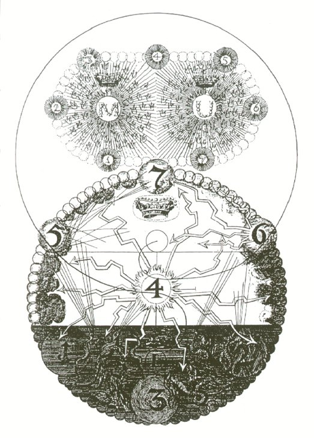
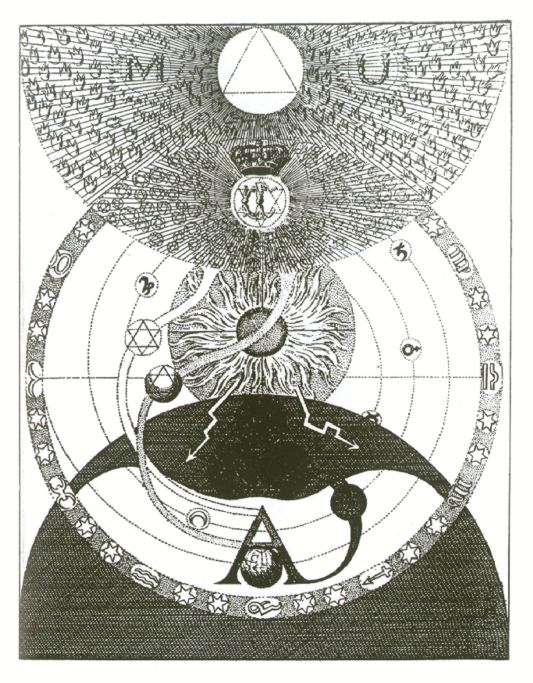
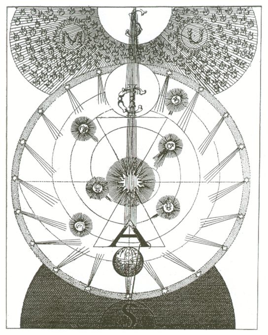
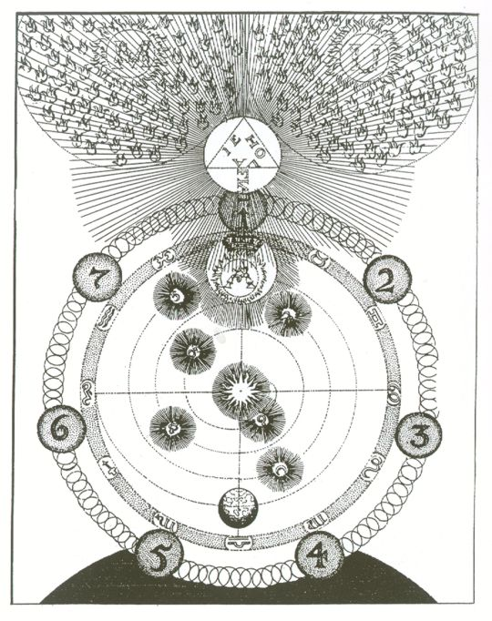

Given the corruption of spiritual knowledge, a blatant example is how the Sanskrit 'AUM' is being corrupted into 'OHM' in many popular mainstream books and sources. It is supposed to be pronounced 'AHH - UUUUU - MMMM' NOT 'OHHH - MM'! The 'OHM' is a deliberate corruption so that the word no longer has any spiritual power. [The 'UUU' rhymes with the U in the word 'tune.']
This is where science meets with spirituality. Special thanks to High Priestess Zildar who brought this to light, regarding the all-important AUM. AU on the Periodic Table of Elements [Chemistry] stands for Gold. The working of the magnum opus, in addition to having a fully ascended serpent is to turn the "base metals" into gold. The "base metals" are the "metals" of the chakras. For those of you who have met Satan face to face, he has a gold aura. AU also has to do with the aura.
'AUM' is also the Egyptian God 'AMON RA.' Amon is known as 'King of the Gods.' As most of you know, the code-word "Gods" means the chakras. The all-important '666' chakra, which is the solar plexus chakra; is 'King of the Gods.' This is where the Jews and Christians stole their "Amen" from, corrupting the "AUM' into "Amen." As the Judeo/Christian Bible is a book of Jewish witchcraft, a connection must be made. For more information about this, click here for the article regarding "The Christian Mass and How it Ties into Jewish Ritual Murder"
"AUM" also means "so mote it be." I always vibrate "AUM" in ending any working I am doing with a Satanic Rosary or with anything where I am using Sanskrit. Nearly all modern books and popular instructions concerning mantras state to use "AUM" at the beginning of the mantra. Using it at the end as well, is actually more powerful; at the end of the entire working.
Sanskrit is a spiritual language and as I mentioned before, I have found the names of many of our Demons of the Goetia in Sanskrit dictionaries. By looking to their names in Sanskrit, this gives much more information on a spiritual level. The legends of the Gods are all important spiritual allegories that contain hidden knowledge.
The extremely large number of repetitions recommended from many popular mainstream sources for mantras is not necessary. The reason for the thousands of repetitions is again...corrupted knowledge. The mantras as we know from Satan are vibrated syllable by syllable. New age people and other idiots just keep repeating mantras as entire words, and not vibrating them. The power lies within the vibration. There is no need to repeat mantras or words of power hundreds of thousands of times.
"AUM" was seen in many ancient Western works of alchemical/occult art. Now, the enemy has [as usual] corrupted the art and the meanings. The enemy has taken great pains to delete the 'A' from ancient illustrations and in modern times, "AUM" is being replaced with "OHM."
Another thing...nearly all of the words in Sanskrit end in the letter 'A.' I have a book on Laya Yoga [Layayoga: The Definitive Guide to the Chakras and Kundalini by Shyam Sundar Goswami], and the author has within all of the text, the letter A presented in italics, like some sort of code.
| Now, note in this ancient illustration, taken from the "Hieroglyphica Sacra" 1764, by Dionysius Andreas Freher, who was a follower of Jakob Böhme [both Christian mystics], this is also in the Roob book; the 'A' has been erased from the top sphere.
I know this because I have run across similar illustrations where the 'A' is intact, as seen below. There is no just "M U." |  |
Alexander Roob wrote in his book "Alchemy & Mysticism" [I don't know whether or not he is deliberately telling lies, or is just someone who passes on corrupted information]; he wrote in the caption for these two illustrations:
"The starting situation shows the residence of the divine trinity including the flames of the heavenly host. They are divided into the hierarchies of the archangels Michael [M] and Uriel [U]. The third and topmost is unoccupied, for its previous occupant, the representative of Jesus, has committed high treason by his willfulness. Lucifer ascends, driven downwards by his proud willfulness, but Michael and Uriel cast him down through the fire."
This is a blatant corruption and by using these sacred letters to represent Jewish filth; this is why anyone who believes this to be fact and/or ties into these Judeo/Christian energies never advances in spiritual power. The deluded are under the control of the enemy when they tie into this corrupted and desecrated information.
| Here is another illustration with the A missing. Note that the shape of the illustration is very similar in the upper part to Belial's Sigil: |  | 
|
Other illustrations have been corrupted with Hebrew letters, and other Jewish symbols that have been stolen like everything else. In the movie "The Ninth Gate" [click here for information about this movie] which is one of my favorites, in the book, the illustrations that had 'LCF' these were the ones with accurate information. Even though this movie is fiction, there *are* some truths in it. The doorway being bricked up at the end of the maze in one illustration indicated the path to truth was corrupted and there was no way out. Check this movie out if you haven't seen it. They deleted a scene...Baroness Kessler was German and a Satanist:
76. KESSLER BUILDING: OFFICE INT/DAY
A black and white photo fills the screen: it shows a young and beautiful BARONESS KESSLER flanked by two men in SS uniform. One of them is Heinrich Himmler.
BARONESS KESSLER is scowling down at a wartime number of 'Signal', the Nazi propaganda magazine. It's lying open on her desk with Balkan's envelope beside it.
For the original script for the Ninth Gate, click here.
Now check these illustrations out...
|
The A is still at the bottom:
 |
Another one where they didn't delete the A:  |
More...note the 'A' beneath the crown:
 |
I have also noted the 'AUM' on freemason illustrations; the ones that have the pillars of the soul. Given the enemy has been and still is working over time to remove spiritual knowledge, it is very difficult to find an example here online, I spent some time trying. I saw this in a book. If you do your own research, you will find this either online or in books.
© Copyright 2013, Joy of Satan Ministries;
Library of Congress Number: 12-16457
BACK TO MAIN POWER MEDITATION PAGE